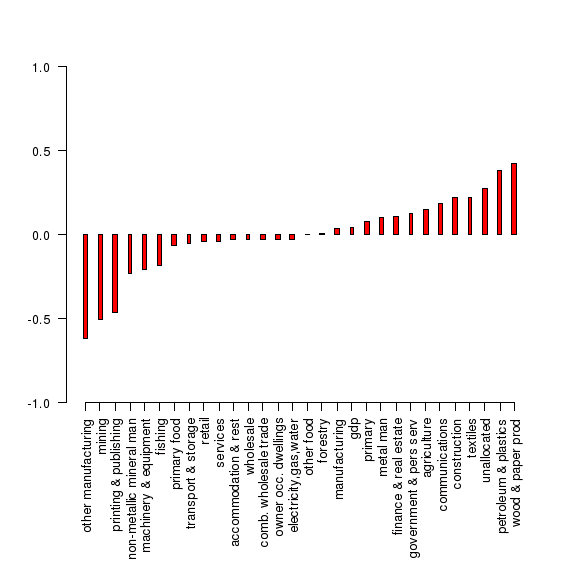

by
Robin Johnson1
Statistics New Zealand adopted the Australian and New Zealand Standard Industrial Classification in 1993 replacing the NZSIC previously in vogue. A number of key sectors of the economy are affected by the changes in definition in a way that makes all new data sets lack compatibility with those that went before. This is particularly the case with the Philpott collection where the industrial classification was all NZSIC. Since 1993 Real GDP, Labour Employment and Gross Capital Investment have all been on a ANZSIC basis. This paper discusses the problems that were created by the somewhat arbitrary changes that were made and suggests a methodology of overcoming the matching problem. R&D statistics collected by MoRST are also classified by the NZSIC system. The paper concludes with a discussion of the standardisation of R&D statistics to the different industrial classifications.
Economists are heavily reliant on the statistical data sources which describe the economy. There is an inherent trust that the materials have been put together in an objective and scientific manner. In the industrial classification area, the main disaggregation takes place for industry by industry analysis. Furthermore the continuing series of statistics provides the time series for most of the econometric testing of economic models. The Philpott series of data sets is a good illustration of productive use that many of these industry by industry collections have been put. The problem with the Australian and New Zealand Standard Industrial Classification (ANZSIC) is that it puts a discontinuity in the time series of all statistical collections that rely on the industry classification.
ANZSIC was producd by the Australian Bureau of Statistics and the New Zealand Department of Statistics for use in the collection and publication of statistics in the two countries. The development of the ANZSIC resulted from the need to improve comparability of industry statistics for the two countries. International comparability was enhanced by aligning the ANZSIC with the International Standard Industrial Classification of All Economic Activities (ISIC), Revision 3, where possible. Users of industry statistics in both countries have been widely consulted in the development of the ANZSIC. In preparing the classification considerable effort has gone into reaching a suitable balance between maintaining historic comparability and keeping pace with changes in technology and in the business environment (Preface to the ANZSIC 1993 classification).
This paper is about maintaining historic comparability in the output, capital and labour employment series on an industry basis. The series actually reviewed are the Real Gross Domestic Product estimates on a 1995-96 price base, Full and Part Time Employment, and Gross Fixed Capital Formation. The capital stocks data employed by Prof Philpott was derived by him from the NZSIC gross capital formation series and hence is not an official series (though one has since been published by Statistics New Zealand). We therefore examine the two sets available and see where they can be amalgamated or modified. We produce a new set of real GDP data back to 1960 compatible with ANZSIC. We examine full time employment statistics and their availability and we construct compatible capital formation and capital stock data for the period 1987-2000. We end with a brief discussion of industry classification in the MoRST survey of R&D expenditure since 1989.
The 1995-96 revision of the Statistics Real GDP Series involved not only changes to the base year prices, but the introduction of chain-linking price valuations and a change in the industrial classification of industries employed (ANZSIC) using SNA93 methodology. All these changes make linking the new estimates to old estimates produced by Statistics extremely difficult on a consistent basis. The well-known Philpott tables (1994, 1999) were based on the Statistics data using the old classification system (NZSIC) for sectors and on the UNSNA system dated 1968. Statistics produced several years of the accounts for overlapping years (1986-96) and according to Haugh (2001) were going to extend the new series back to years previous to 1986.
In this section I try to identify where the most important changes took place and construct a model for revising the Philpott series to be consistent with the 1995-96 price-based ANZSIC revision. I first assess the recalibration work done by Haugh (2001) at Treasury.
Statistics New Zealand (SNZ) released upgraded national accounts at the end of 2000 and in mid 2001. These introduced a number of important changes, including moving from a fixed weight to a chain linked calculation of constant price data and the introduction of SNA2 93 and ANZSIC definitions and classifications. In what follows, these series are referred to as fixed and chain series respectively.
The new SNA 93 ANZSIC chain series are New Zealand's official data series and replace the previous official series, which was based on SNA 68 NZSIC fixed weights data. The new chain series for production sectors is available from the June quarter of 1987 onwards. The fixed series for production sectors is available from September 1977 and the fixed expenditure series from June 1982. SNZ intend to eventually back date the chain series to the same beginning dates as the fixed series but no deadline for this has been set.
On the production side3, the type and level of disaggregation of the chain and fixed series are very similar to that previously provided; i.e. 27 (fixed) and 28 (chain) industry categories including categories such as agriculture, fishing, forestry, etc. The chain series has a greater level of disaggregation than the fixed series with finance and insurance now split out from real estate and business services.
A search for annual GDP data and non-official data also revealed a number of potentially useful series. These include the Philpott (1994, 1999) annual production GDP series that runs from 1960 to 1998 and the Reserve Bank of New Zealand's (RBNZ) (2001) quarterly expenditure GDP that begins in 1965.
However, in this paper we focus on quarterly data from 1977 for several reasons. Quarterly data enable a more precise dating of the timing of any changes in the characteristics of growth and cycles that may have occurred. Furthermore, we want to minimise the chances that changes in data construction methods will obscure any real change in the underlying series. Data available from 1977:3 have been consistently derived on an SNA basis.
At a broad level, the industry classifications of the fixed and chain series are similar, but there are some differences. Therefore, in order to create as comparable fixed and chain series as possible from an industry classification perspective, a number of transformations were made.
The level of aggregation and classification across the fixed and chain datasets differs in some cases. Finance, insurance, business services and real estate is one category in the fixed data but is split into Finance and insurance and Real estate and business services in the chain series. Government and community services, have different classifications in the chain and fixed series. For example, in the fixed series Community services were classified by provider, i.e. private, central government and local government. In the chain series they are classified by industry, regardless of whether the service provider is market or non-market. In order to create comparable categories some industries have been combined into larger categories.
For example, the chain Finance, insurance and business services and real estate series have been summed to create a combined category for comparability with the fixed series, which is only available at this higher level of aggregation.
In some cases similarly labelled series, e.g. Other manufacturing, are measuring different things in the fixed and chain series because they are combinations of different industries under ANZSIC compared to NZSIC. Furniture manufacturing has moved from Wood products manufacturing to Other manufacturing. In three cases, Other manufacturing, Wood products manufacturing and Basic metals manufacturing, a conversion concordance from NZSIC to ANZSIC was used to create fixed ANZSIC series for comparison with the chain ANZSIC series. For example, 75% of the old NZSIC Wood products manufacturing industry and 50% of the old NZSIC Pulp and paper industry have shifted to the new ANZSIC Wood and paper products manufacturing category. A very approximate fixed weight Wood and paper products manufacturing ANZSIC series was created by summing 50% of the NZSIC Pulp and paper industry and 75% of the NZSIC Wood products manufacturing industry. These derived fixed weight ANZSIC series have higher correlations with their chain ANZSIC series counterparts than the original fixed NZSIC series. For example, for Wood and paper products manufacturing the correlation for first differences of the logs of the series rises from 0.55 to 0.88.
Wholesale trade Retail trade and Accommodation & restaurants data are available on a similar basis in both data sets but the sub-industries Retail trade and Accommodation & restaurants are only available from June 1986 so these have been combined with Wholesale trade to make a combined category comparable with wholesale trade from September 1977 to March 1986.
The calibration method uses the relationship between the growth rates (more specifically the first differences of the logs) of the seasonally adjusted chain and fixed volume [quarterly] series. The growth rates as opposed to the levels are used because the growth rates appear to be stationary while the levels are not. Visual inspection of the growth rate data indicates that in particular they fluctuate around a long run constant mean with stable variance although they may move from local mean to local mean within the business cycle. The Phillips-Peron test also indicated that all the growth series (both fixed and chain) were stationary apart from owner occupied dwellings for both the fixed and chain series, which show some short-term trending behaviour.
The chain and fixed series growth rates were compared by industry in two ways. The first method was to compare the mean and standard deviation of the quarterly growth rates for the period June 1987 to June 2000 for which there was common data. The second method of comparison was to construct both scatter and time series plots of the growth rates of the chain and fixed series by industry to examine how well the two series were related and how time affected the relationship if at all.
Figure 1 shows the difference between the mean quarterly growth rates for the chain and fixed series by industry. Figure 2 shows the difference between the standard deviation of the quarterly growth rate for the chain and fixed series by industry over the period 1987 to 2000.
Figure 1: Chain minus Fixed Mean Quarterly Growth Rates 1987 to 2000
Figure 2: Chain minus Fixed standard deviation for the period 1987 to 2000
The comparison of mean growth rates shown in Figure 1 illustrates that the mean growth rates for total production GDP are very similar. The mean growth rate for the chain series is only 0.04 percentage points higher than the fixed series. By industry, the range is from 0.6 percentage points for Other manufacturing to 0.4 percentage points for Wood and paper manufacturing (chain- fixed).
As noted above the Other manufacturing and Wood product manufacturing series have been affected by new industry definitions, which have resulted in Furniture manufacturing moving from Wood and paper product manufacturing to Other manufacturing, and Pulp and paper moving from Printing, publishing, pulp and paper to Wood and paper manufacturing. For 23 out of the 29 industries including the 5 main sectors, the quarterly growth means for the chain and fixed weight series are within +/-0.2 percentage points of each other.
Using visual examination of the time series plots, the industries and total GDP were divided into 3 broad categories: (1) chain and fixed series that are noticeably different over the whole period (September 1987 to June 2000); (2) chain and fixed series that are very similar over the first half of the period but the relationship is less clear in the second half; and (3) series where the relationship between the chain and fixed series is very similar for the whole period.
There are only two small industries in category (1), Mining and other manufacturing. The upgrade of the national accounts has led to significant changes in these series and even after correcting for ANZSIC changes in Other manufacturing the relationship between the 2 series is more diffuse than for other industries. The calibrated results for these two industries should therefore be treated with more caution than for other industries.
The industries in category (2) might contain a structural break in the relationship between the chain and the fixed series because in some cases SNZ have used a method for calculating the series from the June 1994 quarter that differs from the method used prior to this date. For example, sub-component volume indexes for some industries, e.g. meat and dairy volume indexes for the Primary food manufacturing industry have been calculated using updated 1996 commodity weights but the new weights have only been used from June 1994 onwards. In other manufacturing industries, ANZSIC producer prices have been used in deflation from June 1994, but weighted NZSIC producer prices were used prior to this date. Any changes in the methodology affecting the price indexes used in deflation could flow through to the constant price series. In other cases for example, Wholesale trade, Retail trade and Accommodation, cafes and restaurants calculations are performed with a finer level of detail than previously but the changes have only been backdated to June 1994. Prior to 1994 these series are linked to weighted proportions of old NZSIC sub-component series.
At the 5% level of significance the null hypothesis of no structural break was only rejected for Combined wholesale trade; Electricity, gas and water; Forestry; Owner occupied dwellings; and Other food manufacturing. For the first two industries there is also clear visual evidence of a structural break, with the relationship becoming more diffuse in the second half of the data.
Statistics New Zealand have calculated these industries with different weights and/or a finer level of detail than previously but only made these changes to the series back to June 1994.
As these changes will not be made to the series prior to June 1987 either, the relationship between the fixed and chain series for these two industries is best captured by estimating the relationship for the period June 1987 to March 1994 only.
Haugh offers correction factors for the Wood, Paper, Printing, & Other Manufacturing sectors based on splits/concordances (derived I presume from Stats before and after [quarterly?} tables) as to how they were classified before and after SNA 93 and ANZSIC. He also has a split for Basic Metals and Machinery. I have applied these to the Philpott series in 1987-88 and produced plausible substitutes that are price consistent with the overall change in prices between the data based on 1982-83 prices and that based on 1995-96 prices. Wholesale Trade, and Finance and Insurance, are amalgamated by Haugh and thus satisfy his tests. As Philpott used this aggregation in his series (and has not recorded the individual components) this overcomes any problems for our conversion. Finally, Government Services and Personal Services show unusual price changes between the two bases which suggest the content or the methodology has been changed between the two revisions (discussed below).
I propose to use the Haugh conversion factors where they apply and check these against the before and after annual estimates for 1987-88 at 1995-96 prices. Statistics (Nick Treadgold) inform me that for Communications and O-O Dwellings there are no changes between ANZSIC and NZSIC definitions. Small changes made were due to the re-estimation of the consumption of fixed capital and the capitalisation of computer software in the former.
For Government, there were significant differences.between ANZSIC and NZSIC. While Local Government was unchanged, education and health components of Central Government were moved into Personal Services. Personal Services also have a number of other changes which increase the differences slightly.
From these comparisions I have constructed the following adjustments to the Philpott industry categories in 1987-88 as in Box 1.
Box 1: Concordance Factors for Real GDP in 1987-88
I. Assume 30% of Wood and Wood Products is Furniture (rest combines with balance of Paper Products to form Wood and Paper Product Manufacturing).
II. Assume 54% of Paper Products, Printing & Publishing is Printing and Publishing (balance to Wood and Paper Product Manufacturing).
III. Asume 30% of Machinery & Metal Products is Fabricated Metal Products and add to Basic Metal Product Manufacturing (balance is Machinery and Equipment).
IV Add Furniture to Other
V. Maintain Finance, Insurance, Property and Business Services as an aggregate
VI. Assume Government (Central and Local) is 34% of combined total of Government and Personal Services (the ratio in 1987-88).
VII. All other industries assumed to be defined approximately the same in both classifications.
These are percentage ratios and can be applied to Philpott's data still expressed in 1982-83 prices. Philpott's industry classification now becomes ANZSIC based.
This all assumes that these concordance ratios hold constant back thru time. We want to go back to 1960. By taking 1987-88 proportions we preserve any trend shown in the Philpott data but the absolute amounts would be increasingly distorted for the industries concerned the further we go back. As an alternative I could suggest that we simply weld the Philpott data to the ANZSIC data base (as I have done previously) by matching the old data to the new data at a common year. This would preserve the trend in the old data but the absolutes would still have less meaning compared with the ANZSIC-adjusted framework.
Finally we need to think about the base year prices of the restored series. It would be convenient to bring the past data into 1995-96 prices as far as the present chain-linked series is concerned; but how long will Statistics stay with this price base? For some purposes, it will be necessary to continue the old series at 1982-83 prices. I have re-worked the implicit price comparisions between the 82-83 base and the 95-96 base by industries when the above corrections are taken into account. A full chain linked series back to 1960 will have to wait until the Statistics revisions are finished.
File 87/88 comparisions GDP contains:
Up to 1990, Philpott (1994) based his estimates on the Quarterly Employment Survey. Agriculture was estimated from the Agricultural Census. In Philpott (1999), he based his estimates on the Household Labour Force Survey (HLFS). The data are March year annual averages of the quarterly HLFS statistics with full time equivalents calculated as one part time worker = 0.35 a full time worker (RPEP No 293). This data was welded to the earlier QES data from 1987.
I have continued this series up to March year 2002 by asking Statistics to recalculate the full- time and part-time employment by industry on the same basis. The new data is welded to the old data from1997-98. This set is only NZSIC compatible. (See file "philpott base xls")
The industry classification used by Philpott and Statistics is shown in Box 2.
Box 2: Employment by Industry: NZSIC and HLFS classification(Philpott)
According to Statistics ( J Morris) current labour employment statistics are ANZSIC based back to 1996. Part-time workers are weighted at 0.5 FTEs. FTEs from the QES are available at the ANZSIC industry 1 level (excluding agriculture) from 1989 to the present. Up to June 2003, there was a transition period in the conversion from NZSIC to ANZSIC while both codes were used. The March 2003 quarter of the HLFS featured a change to the industry coding system [on the returned questionaires] on an ANZSIC basis at the 3 digit ANZSIC level. This was to overcome certain non-sampling error problems like identifying the correct industry a firm belonged to and other possible processing errors. NZSIC-based statistics have been discontinued.
Thus Philpott's series were never compatible with the published weighted series though they were compatible with the QES data itself. Statistics has ongoing research to take the ANZSIC series back to 1970.(J Morris). In the meantime the only long term series is that of Philpott which is not compatible with ANZSIC-based real GDP. I have not investigated a concordance system that might align the NZSIC based data to ANZSIC.
I will discuss the Philpott approach first and then the approach adopted later by Statstics New Zealand. We start with capital investment in each industry and then proceed to estimating stocks of capital. In later work, Philpott (1994, 1999) used the GCF values given in the Expenditure estimates of GDP in the aggregate and industry estimates from NZIER. as Statistics had not generated the data for industry GCF after 1990 at that time. Statistics has now produced a new GCF series from 1972 to 1997 (recently up-dated to 1999) on the ANZIND classification. ANZIND is is an ANZSIC based classification used to group industries for publication ( Nick Treadgold). Philpott's data is all NZSIC based.
For deflating the nominal series of GCF, Philpott used the implicit deflator for GCF from the aggregate expenditure GDP series. This applied across all industries. In updating Philpott's stock series to 1999 I have used the All Groups Capital Goods Price index which has been available since December 1989 and the Stats GCF data from 1990-91. The same price index is used across all industries. Philpott appears to have been slightly under-estimating the absolute level of nominal CGF though not of real GCF. e.g.
| Total GCF Expenditure-Nominals $m | ||||||||
|---|---|---|---|---|---|---|---|---|
| Years | 90-1 | 91-2 | 92-3 | 93-4 | 94-5 | 95-6 | 96-7 | 97-8 |
| Stats | 14421 | 11972 | 12571 | 15035 | 17747 | 19890 | 21110 | 20678 |
| Philpott | 13948 | 11702 | 12612 | 14870 | 17212 | 18651 | 19379 | - |
| Real GCF $m | ||||||||
| New estimate | 9986 | 8091 | 8286 | 9684 | 11242 | 12441 | 13195 | - |
| Old Estimate | 9658 | 8161 | 8817 | 10405 | 11348 | 12261 | 12971 | - |
While the Stats GCF data is ANZSIC consistent, I have not adjusted it to an NZSIC basis in these estimates. Where the largest discrepancies occur (in the same industries as for real GDP) the percentage changes in the ANZSIC series have been married to Philpott's NZSIC data sets.
Net Capital Stocks refer to an perpetual inventory (PIM) series of Philpott's which assumes wastage of assets is equal to the IRD rates of depreciation for land and buildings, and plant and equipment. Starting values are derived from balance sheet data for 1950 (RPEP Paper 270). Philpott derived stock values for buildings and plant separately and then added them. Each year deflated capital investment is added and depreciation deducted. The end-of-year values become the starting values for the following year.
The new Statistics series on capital formation does not give buildings
and plant separately so my updating averages the depreciation rates and
applies the PIM model to the aggregates (This information can be obtained
from Stats if needed). To obtain average depreciation over both types of
asset the actual wastage
in 1990-91 in each sector was estimated from
Philpott's data for that year and applied to subsequent years. Over all groups,
the average wastage in that year was 6.25%. This could vary slightly from year
to year as the industry weightings change.
| All Groups Total NZSIC (at beginning of year shown) | ||||||||||
|---|---|---|---|---|---|---|---|---|---|---|
| Years $m | 88-9 | 89-0 | 90-1 | 91-2 | 92-3 | 93-4 | 94-5 | 95-6 | 96-7 | 97-8 |
| New estimates | 122817 | 124878 | 127412 | 129434 | 129436 | 129632 | 131215 | 13425 | 138276 | - |
| Old estimates | 122376 | 124033 | 126628 | 128562 | 128886 | 129912 | 132464 | 136431 | 140470 | 144988 |
Gross Capital Stocks refer to stocks where wastage is estimated by a time of
retirement methodology. Basically assets stay in use until they are discarded.
This methodology requires estimates of the life
of an asset (Philpott calls them service lives). He says: ‘Consistent with the OECD approach we assumed that assets began to be retired at a point in time 20%
earlier than their average service life and that this retirement concluded at a
point 20% later than that date and that the retirement process was
linear’. For an asset of life 20 years,
the wastage would be spread as one eighth from year 16 to year 24 (RPEP Paper
No 105).
Starting values were estimated for 1950 and a profile of retirement rates estimated for that year and spread over subsequent years. All new investment was then retired by the rules outlined above.
For up-dating purposes we do not have these time profiles of the Philpott gross stock estimates. It is possible, however, to estimate what the end-effect is in any one year by deducting capital investment from the change in gross stocks. This varies from industry to industry (with different service lives assumed) and in 1990-91 the national retirement of assets was 2.003% of the stock at the beginning of the year. Transport was as high as 5.46% and Electricity was 1.22% per year.
It follows that this percentage will not be constant but will vary according to the time profile of capital investment 20-40 years earlier. Here is a comparison for some industries for 1996-97 compared with 1990-91:
| Implicit Wastage | ||||
|---|---|---|---|---|
| Industry | 1990-91 | 1996-97 | ||
| Total | % of Stocks | Total | % of Stocks | |
| Agriculture | $557m | 2.902% | $499 | 2.525 |
| Electricity & Water | $227 | 1.223 | $235 | 1.163 |
| Finance and Insurance | $269 | 1.288 | $302 | 1.039 |
| All Groups | $4378 | 2.003 | $4640 | 1.837 |
Apparently, the amount being discarded is getting larger except in the case of agriculture. This reflects higher investment in some earlier period. While the total amount being discarded is higher it is lower in percentage terms as the stock has grown larger in the interim.
For my updating I have assumed that the 1990-91 depreciation/wastage rates for each industry category held throughout the 1990s.
| All Groups NZSIC (at beginning of year shown) | ||||||||||
|---|---|---|---|---|---|---|---|---|---|---|
| Years $m | 88-9 | 89-0 | 90-1 | 91-2 | 92-3 | 93-4 | 94-5 | 95-6 | 96-7 | 97-8 |
| New estimates | 210323 | 215847 | 221863 | 227404 | 230941 | 234601 | 239586 | 246029 | 253513 | - |
| Old estimates | 208466 | 212655 | 218584 | 223864 | 227639 | 231986 | 237932 | 244809 | 252552 | 260883 |
Statistics prepared their own capital stock series in 1999. To do this they updated the GCF data from 1990 on an ANZIND basis. They have published a current price series of capital stocks on an industry basis back to 1972 and a 1995-96 price chain linked industry series back to 1972. These estimates of stocks use the same GCF series as used above for the Philpott corrections, but the base stocks and depreciation rates are defined differently.
In Statistics (2000) gross capital stock is defined as accumulated investment less the
accumulated value of the assets no longer operating (that is, retired)
. Net
capital stock represents accumulated investment less retirements
and accumulated depreciation for assets still operating (that is, gross capital
stock less accumulated depreciation on assets still in operation).
Depreciation figures are based on assets valued at current replacement cost
and consistent rates of depreciation which better approximate the useful lives
of assets.
In summary:
Opening balance sheet value of a specific asset, plus
Value of assets aquired, less
Value of assets disposed of or depreciated, plus
Value of other positive or negative changes (war destruction), plus
Value of the positive or negative holding gains accruing during the period such as cost of
replacement, equals
Value of stock of asset in closing balance sheet.
Statistics (Pipat Wongsaart) say that, as a result of market forces, the purchaser's price of a new fixed asset should provide a good initial estimate of the present value of the future rentals. This applies to all years throughout the period covered. Hence, net capital stock for each of these years can be defined as the total values of fixed assets in a particular year taking into account the asset's efficiency loss and cost of capital. I have not sighted a table of service lives or how it is treated in individual industries.
Thus these estimates differ from Philpott in the way they take account of disposal of assets and in the way they take account of extraneous events. I am not clear how the service life definition differs. I remember Brian Easton has raised this issue of lost assets previously in discussion of the Philpott data.
The chart (next page) shows Philpott's two real series as compared with the new Stats real series all in 1995-96 prices. Philpott's net stocks are growing more slowly than the Stats estimate due to higher depreciation (IRD rates). In 1999-2000 Stats are 46% higher than Philpott net stocks. On the other hand, Philpott's gross stock series are 24% higher than Stats net stocks (as might be expected) in 1999-2000 due to the lower wastage through his assumption of service lives and his lack of data on asset disposal. If the increment of investment is common to Stats and Philpott (as adjusted by myself), the difference in growth must be due to depreciation/wastage/write-off rates
Can Stats series be used for econometric work? They are ANZSIC consistent and hence match the revised real GDP data base for industry from 1972. Social capital definitions need to be looked at. Only the current employment data is not ANZSIC consistent before 1989. So Ralph can do production functions on a consistent basis from 1989 to the present using Stats data. This is a lot of work to get such a simple answer, Ralph!
Stats has seriously disturbed the historical collection of macroeconomic statistics in NZ by introducing ANZSIC. They say they had some regard for continuity of previous statistical collections. It seems to me that the authors should have had a plan to convert GDP, employment and GCF on a similar basis for similar time periods back to some common date in the past. At the moment it would be a good idea if someone extended back the employment statistics on an ANZIND basis back to 1972 as a matter of priority (I am assured [by J Morris] that a team is working on it).
Haugh David, (2001), Calibration of a Chain linked Volume Production GDP Database, NZ Treasury Web site.
MoRST (Var), NZ Research and Experimental Development Statistics: All Sectors, Ministry of Research, Science and Technology.
Philpott, Bryan (1994), Data Base of Nominal and Real Output, Labour, and Capital Employed by SNA Industry Group, Research Project on Economic Planning Paper 265, School of Economics and Finance, Victoria University of Wellington.
Philpott, Bryan (1999), Provisional Estimates for 1990-1998 of Output Labour & Capital Employed by SNA Industry Group, Research Project on Economic Planning Paper 293, School of Economics and Finance, Victoria University of Wellington.
Statistics NZ (2000), Measuring Capital Stock in the New Zealand Economy, Key Statistics, December.
(i) R & D Expenditure
Since 1989, MoRST have carried out annual or semi-annual surveys of R & D expenditure in New Zealand (MoRST var). These carefully delineate research expenditure in the major providers of research; government, firms and universities, and also identify which productive sectors the research is aimed at. The surveys also carefully differentiate between fundingfunctions and provider functions. Thus for the period 1989-90 to 2000-01 there is a detailed record of research expenditure on a provider (who carries it out) and a funder basis (who pays for it) including the designated sectors to which the research is directed. For the analysis of impacts of this research endeavour, the provider basis of R & D is the best guide.
For the period from 1989 back to 1962, the record of Government expenditure on R&D is almost complete. Total departmental funding is faithfully recorded in the Department of Statistics' Yearbooks and by NRAC and designated industries affected by areas of research are identified on a broad basis. Some extrapolation of data is required to get sectoral public expenditure back to 1962 on a consistent basis.
(ii) NZSIC Groups
In combination with the productive sectors recognised in the MoRST surveys, the Yearbook coverage determined the number of sectors which could be analysed for the whole period back to 1960 (R&D sector below). As the productivity data is presented on a national accounting basis (SNA) according to NZSIC, the following schema shows the sectoral allocation used in my research papers:
| MoRST output classes | R & D sector | NZSIC sectors (Philpott) |
| Animal industries
Dairy industries Forage Horticultural, Arable |
Agriculture | Agriculture |
| Fisheries
Forest products Food & beverages |
Fishing
Forestry Processing |
Fishing Forestry Food, Wood, Paper, Textiles |
| Materials
Engineering Electronics |
Manufacturing | Mining, Basic Metal,Chemicals, Non-metallics, Machinery |
| Energy
Construction Transport services Tourism |
Energy
Building Transport Services |
Electricity, Gas and Water
Building and Construction Transport and Storage Services Trade, Communications, Finance, Community Services |
| Information
Planning Social sciences Environment Fundamental Health Defence |
||
| Total Market Sectors
Ownership of Occupied Dwellings ditto Government Total, All Production Groups |
Production sector
ditto ditto All sectors |
(File reference is R&D Base.xls
)
Appendix 2: Letter from Statistics New Zealand
12 May 2004
In summary, we would not agree that Statistics New Zealand have seriously disturbed the historical economic series. or have the changes in ANZSIC been arbitarily made:
The adoption of ANZSIC was introduced to align the industrial classification used by Statistics New Zealand with other international agencies.Industrial classifications need to be updated perioically to reflect changes in technology and the business environment.
Users are consulted throughout the process of classification revisions.
The range of industrial classifications will be wider when backdating has been completed. In particular:
The range of capital series has been extended significantly since ANZSIC was introduced. Official capital expenditure series by NZSIC industry were previously only available between 1972 and 1987. Since the shift to ANZSIC, these series (both nominal and real) have been backdated to 1972 and are updated on an annual basis (usually t-3).
In addition to capital expenditure series, productivity capital stock, net capital stock, and consumption of fixed capital (replacement cost) by industry have been compiled from 1972 to t-3. None of these series were not available under NZSIC.
The differences between the capital stock series produced by Philpott and Statistics New Zealand are due to some significant differences in assumptions and methodologies. This would appear to fall outside the purpose of this paper.
Statistics New Zealand's capital stock series have been compiled consistently with the
methodologies outlined in the OECD Manual Measuring Capital Stock
. The main
pointof difference is the use of rental prices to weight together assets. This
is not currently done in the StatisticsNew Zealand model.
A couple of points of clarification:
The mining industry has been significantly affected by conceptual changes introduced with SNA93. Where previously mineral exploration was treated as a current expense it is now capitalised and included in gross fixed capital formation
The methodology for compiling primary food manufacturing has not changed between pre-1994 and post-1994. The series have simply been rebased. 1995-96 is the expression period, not the base period. Under chain-linking, the base period is effectively updated on an annual basis.
Note that the ANZIND classification is also that used to publish the output (real GDP) and capital series. It is also that which will be used for the backdated employment series.
Splits of buildings and plant gross fixed capital formation (both nominal and real)are readily available in Statistics New Zealand's published output.
The HLFS is only ANZSIC based back to 1996. This because the HLFS does not code industry low enough to allow a full concordance to be used . Similarly the period up to March (not June as stated) 2003 with dual coding also refers to the HLFS.
The QES is available on ANZSIC back to 1989.
[1] Consulting Economist, Wellington. Grant Scobie and Ralph Lattimore first suggested this project. Considerable help has been received from Statistics NZ which is acknowledged in the text.
[2] United Nations System of National Accounts
[3] Statistics New Zealand also recently released chain-linked expenditure based estimates of quarterly real GDP disaggregated by the usual major expenditure classifications: private consumption, investment, government expenditure, exports and imports. Some of these components are further disaggregated into sub-components.